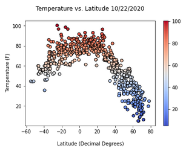

Summary: Latitude vs. X

This project presents the analysis of weather patterns with distance from the equator. Weather data from 500+ cities across the world was obtained using the OpenWeatherMap API. First, 1500 random geocoordinates were identified throughout the world, spanning the full range of latitude (-90 to 90) and longitude (-180 to 180) possibilities. These coordinates were used to randomly select 500+ cities in the vicinities of the random coordinates. The cities were then passed into the OpenWeatherMap API call to identify various identifiers and weather characteritics, including temperature, humidity, cloudiness, and wind speed. Sources for analyis included: OpenWeatherMapAPI at https://openweathermap.org/api and citypy at https://pypi.org/project/citipy.